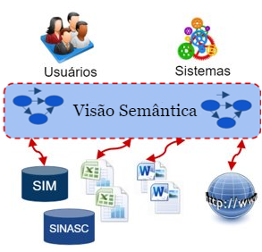

O SemanticSUS, um portal semântico para acesso, analise e visualização de grande quantidade de dados do Sistema Único de Saúde (SUS).
O Portal SemanticSUS é baseado em um enfoque que combina ontologias e Dados Interligados para enfrentar os desafios no desenvolvimento de aplicações onde existe a necessidade de integrar fontes de dados heterogêneas.
O SemanticSUS tem como principal objetivo oferecer uma camada ontológica, conectada semanticamente aos dados, e que permita o acesso integrado aos dados.
A plataforma disponibiliza também o serviço de integração semântica baseado na abordagem pay-as-you-go, o que garante flexibilidade e extensibilidade suficientes para que novas fontes de dados possam ser adicionadas ao portal.
Outra facilidade do portal é a ferramenta Mashup Buider, a qual permite a construção de Mashup de Dados de forma simples e automática.

Figura 1: Representação da camada semântica
2. Arquitetura do SemanticSUS
Um portal pode ser definido como uma aplicação web que age como uma porta de acesso entre usuários e uma variedade de diferentes serviços de alto nível.
Este tipo de aplicação tem como principal finalidade prover um ambiente capaz de coletar e providenciar informações relevantes para um determinado domínio.
Este ambiente é, em geral, composto por um conjunto de ferramentas que permitem que o usuário seja capaz de, e.g., manipular dados apresentados pelo portal para extrair novas informações.
Estendendo o conceito de portal, tem-se a definição de portal semântico ou apenas SWP (Semantic Web Portal).
Um SWP é um portal que tem como principal característica a adição de semântica em seus conteúdos e serviços, de tal forma que estes possam ser vistos como aplicações da web semântica para usuários de pequenas comunidades.
Figura 2: Arquitetura Portal Semântico
Fontes de dados: Nesta camada estão as fontes de dados disponibilizadas pelo portal. As fontes de dados podem ser de diferentes tipos e proveniência.
Extração e anotação de dados: Nesta camada é realizada a extração e anotação das fontes de dados disponíveis no Portal. As anotações são metadados que descrevem desde o formato da fonte até comentários sobre os significados de elementos do esquema utilizado pela fonte.
Ontologia de Domínio: Essa ontologia é usada como um meio para estabelecer um vocabulário formal e explícito a ser compartilhado para a anotação semântica das fontes de dados. A linguagem utilizada para modelagem da ontologia é a linguagem OWL.
Integração Semântica (IS): O resultado da IS define uma visão virtual integrada das múltiplas fontes de dados. Na IS usamos um framework baseado em 3 camadas, como sumarizado na Figura 3. De acordo com esse framework, o resultado da IS é uma n-tupla $\lambda=(O_D, {V_1},...,{V_n}, L, F, Q)$, onde:
$O_D$ é a ontologia de Domínio.
$V_1, ..., V_n$ são especificações de visões virtuais locais descritas pelas ontologias locais $O_{V_1},...,O_{V_n}$.
$L$ é um conjunto de regras de linkage (links semânticos) definidas entre as classes semanticamente semelhantes das ontologias locais.
$F$ é um conjunto de regras de fusão as quais especificam o processo de fusão de objetos relacionados através de um link sameAS em uma única representação.
$Q$ é um conjunto de métricas de avaliação de qualidade, que são usadas para quantificar a qualidade das fontes de dados.
Figura 3: Framework em 3 Camadas
Integração de Dados: O Portal disponibiliza dois serviços de acesso às fontes de dados locais através da visão ontológica.
No SemanticSUS, o processo de Integração Semântica (IS) é baseado na abordagem pay-as-you-go. Essa abordagem permite que a IS possa ser realizada de forma incremental, e a medida que mais esforço é investido na integração semântica de novas fontes de dados, o portal poderá atender as necessidades de um maior número de aplicações. O processo de IS de uma fonte $S$ segue os seguintes passos:
Especificação da visão virtual local $V_S$= < $O_S$, $M_S$ > onde $O_S$ é a ontologia da visão, e $M_S$ é um conjunto de regras que mapeiam o vocabulário de $O_S$ no vocabulário da fonte S. Note que $O_S$ descreve a fonte de dados usando o vocabulário da Ontologia de domínio, portanto $O_S$ é um subconjunto de $O_D$. Na construção da ontologia de domínio também adotamos o enfoque pay-as-you-go.
Especificação das Regras de Linkage as quais serão usadas para gerar Links semânticos, que mapeiam instâncias de $S$ com instâncias de outras fontes de dados que representam o mesmo objeto do mundo real (resolução de entidades). Em OWL, esses links são estabelecidos através da propriedade owl:sameAs. O processo de identificação desses links é conhecido como linkage de dados.
Especificação das regras de fusão para as propriedades de $S$. Estas regras são definidas com base na qualidade da fonte $S$, e são necessárias na resolução de conflitos gerados por inconsistências nos dados.
O portal atualmente SemanticSSUS publica duas bases de Dados do SUS: o SIM (Sistema de Informações sobre Mortalidade) e o SINASC(Sistema de Informações sobre NASCidos vivos). Essa fontes estão integradas semanticamente e já podem ser acessada através da visão ontológica do portal. O resultado da Integração semântica das fontes de dados SIM e SINASC pode ser visualizado na aba Visão Semântica.
4. Consultando as fontes de dados através da Visão Semântica
Os usuários podem definir consultas ad-hoc sobre a ontologia de Domínio, e o mediador semântico, com base na ontologia e nos mapeamentos, irá reformular a consulta em termos de consultas sobre as fontes de dados. O resultado das sub-consultas são integrados e consolidados, e o resultado final é retornado para o usuário. (Ler mais sobre)
5. Construindo Mashup de Dados Especializado
Os usuários podem especificar uma visão de Mashup especializada através de uma interface de consulta facetada sobre a ontologia de domínio, e o Mashup Builder irá materializar a visão de mashup de forma automática, baseado no resultado da integração semântica.(Ler mais sobre)
6. Exemplos de Mashups Especializados
O Mashup Builder foi aplicado na criação do mashup RMN(Risco Morte Neonatal) utilizado no desenvolvimento de um modelo preditivo para estabelecer o risco de morte neonatal. O mashup RMN deverá conter as seguintes informações sobre as crianças que morreram antes de completarem 28 dias de vida (período neonatal): peso, idade gestacional, Apgar, e prévios relatórios de natimorto da mãe. O mashup foi construído utilizando as fontes de dados SIM e SINASC disponíveis na base de dados do sistema GISSA como discutimos a seguir. A construção do mashup RMN usando a ferramenta Mashup Builder. (Ler mais sobre)